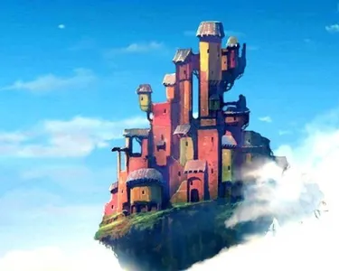
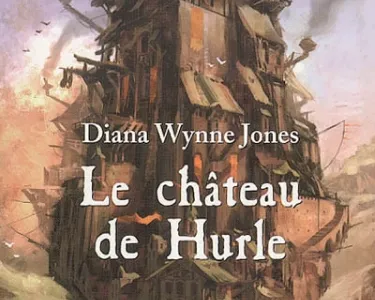
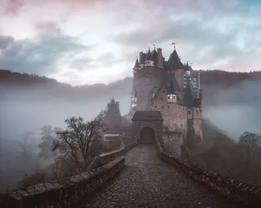

Le Château de Hurle
Dans "Le Château Ambulant" de Hayao Miyazaki, des différences notables, notamment le personnage de Sophie et l'introduction de la magie, apportent une nouvelle dimension au récit, tandis que la guerre et l'univers magique sont au cœur de l'intrigue. Le film transcende son inspiration littéraire pour créer une œuvre cinématographique riche en thèmes magiques et en chaleur, conservant son charme tout en ajoutant une touche unique à l'histoire.
Publié aujourd’hui à 09h50.
Première de couverture du livre Le château de Hurle
"Le Château Ambulant" : Une Adaptation Magistrale
Le film d'animation "Le Château Ambulant," réalisé par Hayao Miyazaki du Studio Ghibli, s'inspire principalement du roman "Le Château de Hurle" de Diana Wynne Jones. Bien que le film reste profondément fidèle à l'essence de l'œuvre originale, il introduit également des nuances subtiles qui lui donnent une identité propre et qui reflètent la créativité distinctive de Miyazaki.
Sophie: une évolution significative
Une des différences les plus notables réside dans le personnage de Sophie, l'héroïne de l'histoire. Dans le roman, Sophie est une jeune femme qui gère la boutique de chapeaux de son père. Cette responsabilité est une source de préoccupation constante pour elle, et elle est déterminée à maintenir le succès de l'entreprise familiale. En revanche, dans le film, la préoccupation de Sophie quant à la boutique de chapeaux est relativisée, du moins au début. Sa transformation en vieille dame suite à un sortilège la pousse à se concentrer davantage sur sa propre situation et sa quête pour briser le sort qui la retient.
Première de couverture du livre Le château de Hurle
L'Émergence de la Magie
Un autre aspect marquant est la magie qui est inhérente à Sophie dans le film, contrairement au roman. Dans l'œuvre de Miyazaki, Sophie découvre progressivement ses propres pouvoirs magiques, ce qui ajoute une dimension supplémentaire à son personnage.
La guerre et la quête de la paix
La guerre est un élément central du film, et c'est un thème récurrent dans de nombreuses œuvres de Miyazaki. Le paysage déchiré par la guerre et les conflits armés jouent un rôle important dans l'histoire, reflétant la vision de Miyazaki sur les conséquences destructrices des conflits. Le réalisateur aborde le sujet avec nuance, soulignant la futilité de la violence et la nécessité de la paix. La position ambiguë de Hurle, qui refuse de prendre parti dans le conflit et préfère se tenir à l'écart, souligne l'absurdité de la guerre et l'impact dévastateur sur les victimes en détresse, souvent des habitants innocents.
Première de couverture du livre Le château de Hurle
L'Exploration d'un Univers Magique
De plus, le film explore en détail l'univers magique, dévoilant les subtilités de la magie, des créatures et des personnages secondaires, tels que les autres sorcières. Cette richesse d'éléments magiques enrichit l'expérience cinématographique, offrant aux spectateurs un monde enchanteur à explorer.
Une Oeuvre Cinématographique Inoubliable
En somme, bien que "Le Château Ambulant" soit ancré dans le roman "Le Château de Hurle" de Diana Wynne Jones, il réussit à capturer les thèmes magiques, les personnages complexes, l'univers enchanteur tout en ajoutant sa propre touche distincte. Les différences, telles que la préoccupation de Sophie pour la boutique de chapeaux, ses pouvoirs magiques, la présence de la guerre, la caractérisation de Hurle, et la profondeur de l'univers magique, apportent une richesse supplémentaire à l'histoire tout en conservant son cœur chaleureux et captivant. Le film est ainsi un témoignage de l'habileté de Miyazaki à prendre une source d'inspiration et à la transformer en une œuvre cinématographique inoubliable.
bibliographie
Série la trilogie de Hurle

Le château de hurle 1986
Roman Fantasy liant aventure et magie
Le château des nuages 1990
L’étonnante suite du château de hurle !